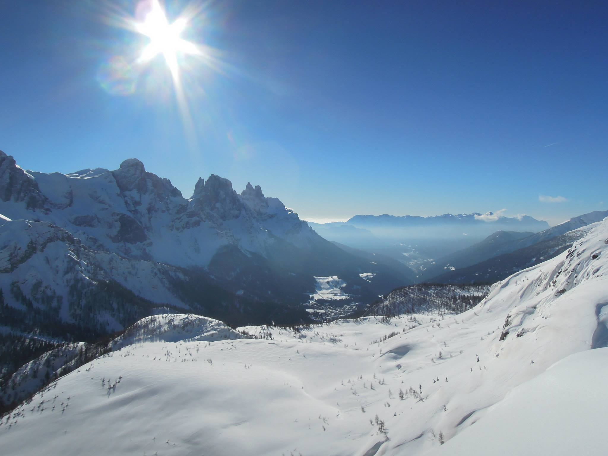
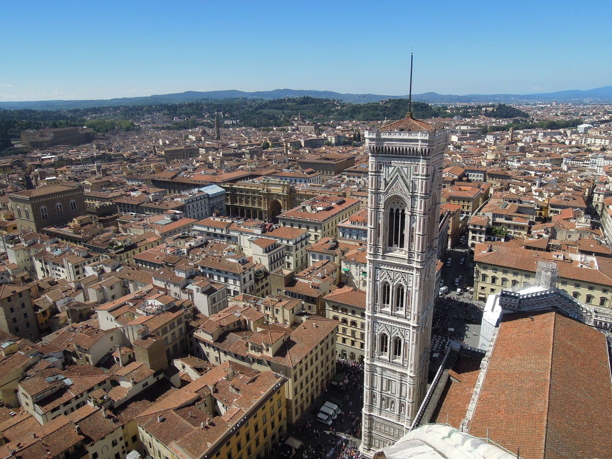
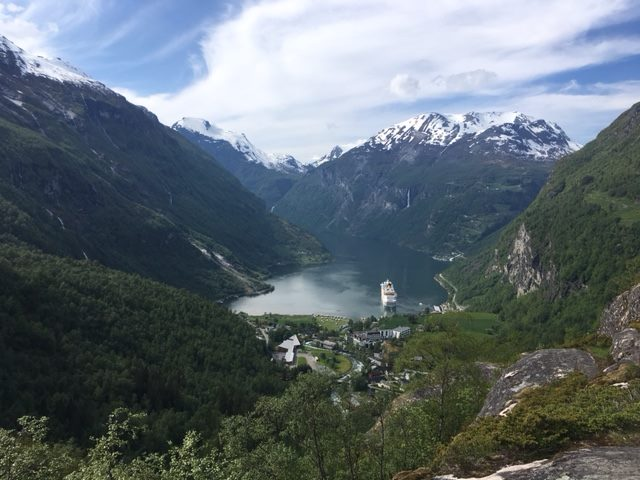

Cestování
Hory a sluníčko

S jízdou na snowboardu jsem začala až jako dospělá a zpočátku to byla "drsná jízda" plná pádů a slz.
Ale postupem času jsem si hory moc oblíbila a stala se z toho skvělá rodinná tradice, kdy každý rok vyrážíme do Alp na dovolenou.
Road tripy

Ráda poznávám nová města a jejich kulturu a kolorit. Tato fotka vznikla během krátkého roadtripu po Itálii, který měl za cíl město Florencie. Mezi mé nejoblíbenější navštívená města patří Londýn, Amsterdam a Varšava.
Nejlepší dovolená

Tato fotka vznikla během úžasné dovolené, kde jsme se plavili výletní lodí po fjordech a poznávali krásy Norska. Každý den loď zakotvila v jiném městě a my jsme tak každý den zažívali nové dobrodružství.